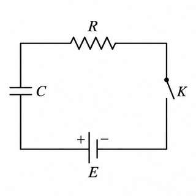
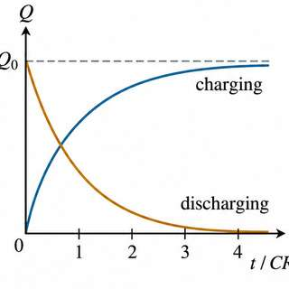
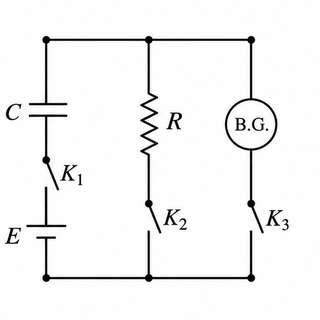
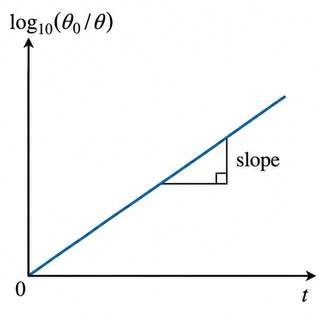
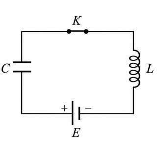
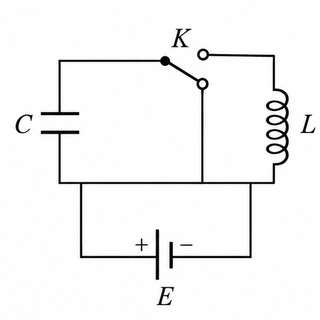
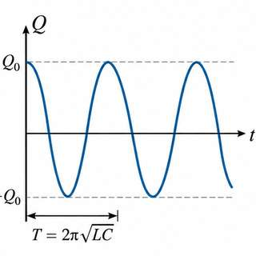
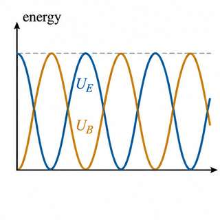

Study notes: Section 2: charge in C-R and L-C circuits; leakage (Murugeshan 12.3 to 12.5)
12.3 Growth and decay of charge in a circuit with resistance and capacitance
Before you start
- Capacitance and charge, $Q=CV$ (Plus Two; pre-physics P3).
- Ohm’s law (pre-physics P1) and the first-order equation solved in §12.1 of these notes.
1. Growth of charge (charging)
A capacitor $C$ and a resistance $R$ are joined to a cell of emf $E$ through a Morse key $K$ (Fig. 12.6). When the key is pressed, a momentary current $I$ flows through $R$. Let $Q$ be the charge on the capacitor at time $t$. The p.d. across the capacitor is $Q/C$ and the p.d. across the resistor is $RI$.

The emf equation of the circuit is
Since $I=dQ/dt$, this is $E = Q/C + R\,dQ/dt$.
2. The final charge
The charge grows until it reaches its maximum $Q_0$. At that instant $I=dQ/dt=0$ and the p.d. across the capacitor equals the emf: $E=Q_0/C$.
3. Separating the variables
Substitute $E=Q_0/C$ into the equation, so $Q_0/C = Q/C + R\,dQ/dt$. Multiply by $C$:
4. Integration and boundary condition
Integrating gives $-\log_e(Q_0-Q) = t/CR + K$. At $t=0$, $Q=0$, so $K=-\log_e Q_0$. Then $\log_e\frac{Q_0-Q}{Q_0} = -\frac{t}{CR}$, which gives
5. Time constant
The time constant is $\tau = CR$. At $t=CR$, $Q = Q_0(1-e^{-1}) = 0.632\,Q_0$. The time constant is therefore the time for the charge to reach 0.632 of its maximum. The rate of growth is $dQ/dt = (Q_0/CR)e^{-t/CR}$. A smaller product $CR$ gives faster charging. The rate of charging is greatest at the start and falls as $Q$ approaches $Q_0$ (Fig. 12.7).
6. Decay of charge (discharging)
Now release the Morse key so that the capacitor, charged to $Q_0$, discharges through $R$. The charge flows out and forms a current. Here $E=0$, so
Separating the variables and integrating with $Q=Q_0$ at $t=0$ gives
The charge decays exponentially and becomes zero only after an infinite time. The rate of discharge is
In Eq. (b)(2), at $t=CR$, $Q = Q_0e^{-1} = 0.368\,Q_0$. So the time constant is also the time for the charge to fall to $1/e$ of its maximum. Growth and decay are shown together in Fig. 12.7.

7. Worked example 1 (printed p. 316)
A capacitor is charged through a resistance of $2\ \text{M}\Omega$. It takes 0.5 s to reach three quarters of its final charge. From Eq. (a)(3), $\tfrac34 = 1 - e^{-0.5/CR}$, so $e^{0.5/CR} = 4$ and $C = 0.5/(2\times10^6\ln 4) = 0.18\ \mu\text{F}$.
8. Worked example 2 (printed p. 317)
A capacitor of $0.1\ \mu\text{F}$ is discharged through $10\ \text{M}\Omega$. The time for the p.d. to fall to half its value is $t = CR\ln 2 = 0.6931$ s, since $Q/Q_0 = V/V_0$ for the same capacitor.
12.4 Measurement of high resistance by leakage (background)
1. Principle
A capacitor of capacitance $C$ and initial charge $Q_0$ is allowed to discharge through a high resistance $R$ for a time $t$. From §12.3, the charge that remains is $Q = Q_0e^{-t/CR}$. Therefore
If $R$ is high, $CR$ is large and the discharge is very slow. Measuring $Q_0/Q$ then gives $R$.
2. Circuit and procedure
$C$ is a capacitor of known value, $R$ is the high resistance, B.G. is a ballistic galvanometer, $E$ is a cell and $K_1$, $K_2$, $K_3$ are tap keys (Fig. 12.8).

(i) With $K_2$ and $K_3$ open, charge $C$ fully through $K_1$. Open $K_1$ and close $K_3$. The capacitor discharges through the galvanometer, which gives a throw $\theta_0$, proportional to $Q_0$.
(ii) Charge $C$ again, open $K_1$, and close $K_2$ for a known time $t$. Some charge leaks through $R$. Open $K_2$ and close $K_3$. The remaining charge $Q$ gives a throw $\theta$, proportional to $Q$.
Since $Q_0/Q = \theta_0/\theta$,
3. Graph
A plot of $\log_{10}(\theta_0/\theta)$ against $t$ is a straight line through the origin (Fig. 12.9). Its slope gives $\frac{t}{\log_{10}(\theta_0/\theta)}$, and with $C$ known, $R$ follows.

4. Worked examples (printed pp. 318–319)
(1) For $C=2\ \mu$F, $R=100\ \text{M}\Omega$ and $Q_0/Q=2$, the leakage time is $t=2.3026\,CR\log_{10}2=138.7$ s. (2) For $C=0.2\ \mu$F, a kick of 12 cm and then 6 cm after 2 s gives $R=14.43\ \text{M}\Omega$.
12.5 Charging and discharging of a capacitor through an inductance
Before you start
- The charge and the p.d. of a capacitor (pre-physics P3); self-inductance and back emf (pre-physics P2).
- Simple harmonic motion: $d^2x/dt^2 + \omega^2x = 0$ (pre-math H2).
1. Charging a capacitor through an inductance
A capacitance $C$ and an inductance $L$ are joined to a cell $E$ through a Morse key (Fig. 12.10). Pressing the key starts a momentary current through $L$ and the capacitor begins to charge. Let $Q$ be the charge on $C$ at time $t$. The emf equation is

Using $I = dQ/dt$, so that $dI/dt = d^2Q/dt^2$, and writing $Q_0 = CE$ for the maximum charge, the equation becomes
This is the equation of undamped simple harmonic motion, with period
The charging is oscillatory. The frequency is
2. Discharging a capacitor through an inductance
The capacitor is charged to $Q_0$ with the inductance out of the circuit. The key is then released so that $C$ discharges through $L$ (Fig. 12.11). No external emf acts during the discharge.

This is undamped simple harmonic motion. Put $1/LC = \omega^2$. The general solution is
with $\omega = 1/\sqrt{LC}$. At $t=0$, $Q=Q_0$, which gives $Q_0 = A\sin\theta$. Taking $\theta=\pi/2$ gives $A=Q_0$, and
So $Q$ decreases sinusoidally: the discharge is oscillatory. The natural frequency is

3. Energy in the oscillation
When $C$ is fully charged, all the energy is stored in the electric field of the capacitor. During discharge, a current flows through the coil for a short time and the energy is stored in the magnetic field of the coil. The energy then passes back and forth between the two fields, which is the basis of the oscillations used in wireless telegraphy.
